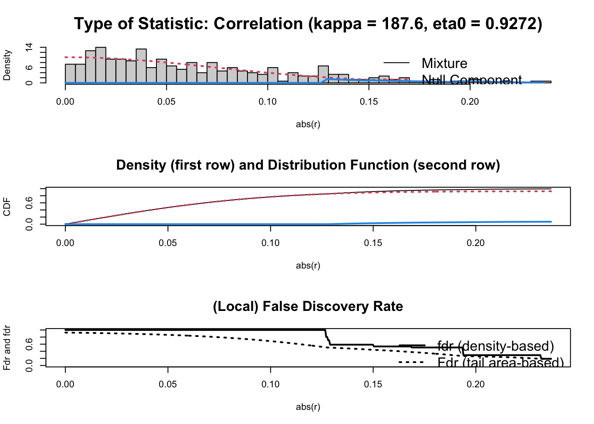

Chapter 27 Graphical Network Analysis
A network represents a structure of relationships between objects. Graphical modeling presents a network structure in a graph, which consists of nodes and edges, by expressing conditional (in)dependence between the nodes. If we think of these nodes (objects) as variables and their relationship with each other as edges, a graphical model represents the probabilistic relationships among a set of variables. For example, the absence of edges (partial correlations) corresponds to conditional independence. Graphical models are becoming more popular in statistics because it helps us understand a very complex structure of relationships in networks, such as the dynamic structure of biological systems or social events.
The central idea is that, since any pair of nodes may be joined by an edge, a missing edge represents some form of independency between the pair of variables. The complexity in network analysis comes from the fact that the independency may be either marginal or conditional on some or all of the other variables. Therefore, defining a graphical model requires identification of a type of graph needed for each particular case.
In general, a graphical model could be designed with directed and undirected edges. In a directed graph, an arrow indicates the direction of dependency between nodes. In undirected graphs, however, the edges do not have directions. The field of graphical modeling is vast, hence it is beyond the scope of this book.
Yet, we will look at the precision matrix, which has been shown that its regularization captures the network connections. Hence, the central theme of this section is the estimation of sparse standardized precision matrices, whose results can be illustrated by undirected graphs.
27.1 Fundementals
In this chapter, we will cover several concepts related to statistical (in)dependence measured by correlations.
27.2 Covariance
We start with a data matrix, which refers to the array of numbers:
\[ \mathbf{X}=\left(\begin{array}{cccc} x_{11} & x_{12} & \cdots & x_{1 p} \\ x_{21} & x_{22} & \cdots & x_{2 p} \\ x_{31} & x_{32} & \cdots & x_{3 p} \\ \vdots & \vdots & \ddots & \vdots \\ x_{n 1} & x_{n 2} & \cdots & x_{n p} \end{array}\right) \]
An example would be
## [,1] [,2] [,3]
## [1,] -1.613670 -4.436764 42.563842
## [2,] -20.840548 36.237338 -36.942481
## [3,] -100.484392 25.903897 -24.294407
## [4,] 3.769073 -18.950442 -22.616651
## [5,] -1.821506 -12.454626 -1.243431
## [6,] 32.103933 3.693050 38.807102
## [7,] 25.752668 22.861071 -18.452338
## [8,] 59.864792 98.848864 -3.607105
## [9,] 33.862342 34.853324 16.704375
## [10,] 5.980194 62.755408 -21.841795We start with defining the covariance matrix
\[ \mathbf{S}=\left(\begin{array}{ccccc} s_{1}^{2} & s_{12} & s_{13} & \cdots & s_{1 p} \\ s_{21} & s_{2}^{2} & s_{23} & \cdots & s_{2 p} \\ s_{31} & s_{32} & s_{3}^{2} & \cdots & s_{3 p} \\ \vdots & \vdots & \vdots & \ddots & \vdots \\ s_{p 1} & s_{p 2} & s_{p 3} & \cdots & s_{p}^{2} \end{array}\right) \] \[ s_{j}^{2}=(1 / n) \sum_{i=1}^{n}\left(x_{i j}-\bar{x}_{j}\right)^{2} \] is the variance of the \(j\)-th variable,
\[ \begin{aligned} &s_{j k}=(1 / n) \sum_{i=1}^{n}\left(x_{i j}-\bar{x}_{j}\right)\left(x_{i k}-\bar{x}_{k}\right) \end{aligned} \] is the covariance between the \(j\)-th and \(k\)-th variables; and,
\[ \bar{x}_{j}=(1 / n) \sum_{i=1}^{n} x_{j i} \] is the mean of the \(j\)-th variable.
We can calculate the covariance matrix such as
\[ \mathbf{S}=\frac{1}{n} \mathbf{X}_{c}^{\prime} \mathbf{X}_{c}, \]
where \(\mathbf{X}_{c}\) is the centered matrix:
\[ \mathbf{X}_{c}=\left(\begin{array}{cccc} x_{11}-\bar{x}_{1} & x_{12}-\bar{x}_{2} & \cdots & x_{1 p}-\bar{x}_{p} \\ x_{21}-\bar{x}_{1} & x_{22}-\bar{x}_{2} & \cdots & x_{2 p}-\bar{x}_{p} \\ x_{31}-\bar{x}_{1} & x_{32}-\bar{x}_{2} & \cdots & x_{3 p}-\bar{x}_{p} \\ \vdots & \vdots & \ddots & \vdots \\ x_{n 1}-\bar{x}_{1} & x_{n 2}-\bar{x}_{2} & \cdots & x_{n p}-\bar{x}_{p} \end{array}\right) \]
How?
## [,1] [,2] [,3]
## [1,] -5.2709585 -29.3678760 45.6561309
## [2,] -24.4978367 11.3062262 -33.8501919
## [3,] -104.1416804 0.9727849 -21.2021184
## [4,] 0.1117842 -43.8815539 -19.5243622
## [5,] -5.4787951 -37.3857380 1.8488577
## [6,] 28.4466449 -21.2380620 41.8993911
## [7,] 22.0953790 -2.0700407 -15.3600493
## [8,] 56.2075038 73.9177518 -0.5148158
## [9,] 30.2050530 9.9222117 19.7966643
## [10,] 2.3229057 37.8242961 -18.7495065## [,1] [,2] [,3]
## [1,] -5.2709585 -29.3678760 45.6561309
## [2,] -24.4978367 11.3062262 -33.8501919
## [3,] -104.1416804 0.9727849 -21.2021184
## [4,] 0.1117842 -43.8815539 -19.5243622
## [5,] -5.4787951 -37.3857380 1.8488577
## [6,] 28.4466449 -21.2380620 41.8993911
## [7,] 22.0953790 -2.0700407 -15.3600493
## [8,] 56.2075038 73.9177518 -0.5148158
## [9,] 30.2050530 9.9222117 19.7966643
## [10,] 2.3229057 37.8242961 -18.7495065And, the covariance matrix
## [,1] [,2] [,3]
## [1,] 1875.3209 429.8712 462.4775
## [2,] 429.8712 1306.9817 -262.8231
## [3,] 462.4775 -262.8231 755.5193## [,1] [,2] [,3]
## [1,] 1875.3209 429.8712 462.4775
## [2,] 429.8712 1306.9817 -262.8231
## [3,] 462.4775 -262.8231 755.519327.3 Correlation
While covariance is a necessary step, we can capture the size and the direction of relationships between the variables:
\[ \mathbf{R}=\left(\begin{array}{ccccc} 1 & r_{12} & r_{13} & \cdots & r_{1 p} \\ r_{21} & 1 & r_{23} & \cdots & r_{2 p} \\ r_{31} & r_{32} & 1 & \cdots & r_{3 p} \\ \vdots & \vdots & \vdots & \ddots & \vdots \\ r_{p 1} & r_{p 2} & r_{p 3} & \cdots & 1 \end{array}\right) \]
where
\[ r_{j k}=\frac{s_{j k}}{s_{j} s_{k}}=\frac{\sum_{i=1}^{n}\left(x_{i j}-\bar{x}_{j}\right)\left(x_{i k}-\bar{x}_{k}\right)}{\sqrt{\sum_{i=1}^{n}\left(x_{i j}-\bar{x}_{j}\right)^{2}} \sqrt{\sum_{i=1}^{n}\left(x_{i k}-\bar{x}_{k}\right)^{2}}} \] is the Pearson correlation coefficient between variables \(\mathbf{X}_{j}\) and \(\mathbf{X}_{k}\)
We can calculate the correlation matrix
\[ \mathbf{R}=\frac{1}{n} \mathbf{X}_{s}^{\prime} \mathbf{X}_{s} \]
where \(\mathbf{X}_{s}=\mathbf{C X D}^{-1}\) with
- \(\mathbf{C}=\mathbf{I}_{n}-n^{-1} \mathbf{1}_{n} \mathbf{1}_{n}^{\prime}\) denoting a centering matrix,
- \(\mathbf{D}=\operatorname{diag}\left(s_{1}, \ldots, s_{p}\right)\) denoting a diagonal scaling matrix.
Note that the standardized matrix \(\mathbf{X}_{s}\) has the form
\[ \mathbf{X}_{s}=\left(\begin{array}{cccc} \left(x_{11}-\bar{x}_{1}\right) / s_{1} & \left(x_{12}-\bar{x}_{2}\right) / s_{2} & \cdots & \left(x_{1 p}-\bar{x}_{p}\right) / s_{p} \\ \left(x_{21}-\bar{x}_{1}\right) / s_{1} & \left(x_{22}-\bar{x}_{2}\right) / s_{2} & \cdots & \left(x_{2 p}-\bar{x}_{p}\right) / s_{p} \\ \left(x_{31}-\bar{x}_{1}\right) / s_{1} & \left(x_{32}-\bar{x}_{2}\right) / s_{2} & \cdots & \left(x_{3 p}-\bar{x}_{p}\right) / s_{p} \\ \vdots & \vdots & \ddots & \vdots \\ \left(x_{n 1}-\bar{x}_{1}\right) / s_{1} & \left(x_{n 2}-\bar{x}_{2}\right) / s_{2} & \cdots & \left(x_{n p}-\bar{x}_{p}\right) / s_{p} \end{array}\right) \]
How?
# More direct
n <- nrow(X)
sdx <- 1/matrix(1, n, 1)%*%apply(X, 2, sd)
m <- matrix(1, n, 1)%*%colMeans(X)
Xs <- (X-m)*sdx
Xs## [,1] [,2] [,3]
## [1,] -0.121717156 -0.81233989 1.66102560
## [2,] -0.565704894 0.31273963 -1.23151117
## [3,] -2.404843294 0.02690804 -0.77135887
## [4,] 0.002581324 -1.21380031 -0.71032005
## [5,] -0.126516525 -1.03412063 0.06726369
## [6,] 0.656890910 -0.58746247 1.52435083
## [7,] 0.510227259 -0.05725905 -0.55881729
## [8,] 1.297945627 2.04462654 -0.01872963
## [9,] 0.697496131 0.27445664 0.72022674
## [10,] 0.053640619 1.04625151 -0.68212986## [,1] [,2] [,3]
## [1,] -0.121717156 -0.81233989 1.66102560
## [2,] -0.565704894 0.31273963 -1.23151117
## [3,] -2.404843294 0.02690804 -0.77135887
## [4,] 0.002581324 -1.21380031 -0.71032005
## [5,] -0.126516525 -1.03412063 0.06726369
## [6,] 0.656890910 -0.58746247 1.52435083
## [7,] 0.510227259 -0.05725905 -0.55881729
## [8,] 1.297945627 2.04462654 -0.01872963
## [9,] 0.697496131 0.27445664 0.72022674
## [10,] 0.053640619 1.04625151 -0.68212986# Or
Xs <- scale(X, center=TRUE, scale=TRUE)
# Finally, the correlation Matrix
R <- t(Xs) %*% Xs / (n-1)
R## [,1] [,2] [,3]
## [1,] 1.0000000 0.2745780 0.3885349
## [2,] 0.2745780 1.0000000 -0.2644881
## [3,] 0.3885349 -0.2644881 1.0000000## [,1] [,2] [,3]
## [1,] 1.0000000 0.2745780 0.3885349
## [2,] 0.2745780 1.0000000 -0.2644881
## [3,] 0.3885349 -0.2644881 1.0000000The correlations above are called “zero-order” or Pearson correlations. They only reflect pairwise correlations without controlling other variables.
27.4 Precision Matrix
The inverse of covariance matrix, if it exists, is called the concentration matrix also knows as the precision matrix.
Let us consider a \(2 \times 2\) covariance matrix:
\[ \left[\begin{array}{cc} \sigma^{2}(x) & \rho \sigma(x) \sigma(y) \\ \rho \sigma(x) \sigma(y) & \sigma^{2}(y) \end{array}\right] \]
And, its inverse:
\[ \frac{1}{\sigma^{2}(x) \sigma^{2}(y)-\rho^{2} \sigma^{2}(x) \sigma^{2}(y)}\left[\begin{array}{cc} \sigma^{2}(y) & -\rho \sigma(x) \sigma(y) \\ -\rho \sigma(x) \sigma(y) & \sigma^{2}(x) \end{array}\right] \]
If call the precision matrix \(D\), the correlation coefficient will be
\[ -\frac{d_{i j}}{\sqrt{d_{i i}} \sqrt{d_{j j}}}, \] Or,
\[ \frac{-\rho \sigma_{x} \sigma_{y}}{\sigma_{x}^{2} \sigma_{y}^{2}\left(1-e^{2}\right)} \times \sqrt{\sigma_{x}^{2}\left(1-\rho^{2}\right)} \sqrt{\sigma_{y}^{2}\left(1-\rho^{2}\right)}=-\rho \]
That was for a \(2 \times 2\) variance-covariance matrix. When we have more columns, the correlation coefficient reflects partial correlations. Here is an example:
## [,1] [,2] [,3]
## [1,] 0.0007662131 -0.0003723763 -0.0005985624
## [2,] -0.0003723763 0.0010036440 0.0005770819
## [3,] -0.0005985624 0.0005770819 0.0018907421## [1] 0.4246365## [,1] [,2] [,3]
## [1,] -1.0000000 0.4246365 0.4973000
## [2,] 0.4246365 -1.0000000 -0.4189204
## [3,] 0.4973000 -0.4189204 -1.0000000## $estimate
## [,1] [,2] [,3]
## [1,] 1.0000000 0.4246365 0.4973000
## [2,] 0.4246365 1.0000000 -0.4189204
## [3,] 0.4973000 -0.4189204 1.0000000
##
## $p.value
## [,1] [,2] [,3]
## [1,] 0.0000000 0.2546080 0.1731621
## [2,] 0.2546080 0.0000000 0.2617439
## [3,] 0.1731621 0.2617439 0.0000000
##
## $statistic
## [,1] [,2] [,3]
## [1,] 0.000000 1.240918 1.516557
## [2,] 1.240918 0.000000 -1.220629
## [3,] 1.516557 -1.220629 0.000000
##
## $n
## [1] 10
##
## $gp
## [1] 1
##
## $method
## [1] "pearson"27.5 Semi-partial Correlation
With partial correlation, we find the correlation between \(X\) and \(Y\) after controlling for the effect of \(Z\) on both \(X\) and \(Y\). If we want to hold \(Z\) constant for just \(X\) or just \(Y\), we use a semipartial correlation.
While a partial correlation is computed between two residuals, a semipartial is computed between one residual and another variable. One interpretation of the semipartial is that the influence of a third variable is removed from one of two variables (hence, semipartial). This can be shown with the \(R^2\) formulation.
Partial:
\[ r_{12.3}^{2}=\frac{R_{1.23}^{2}-R_{1.3}^{2}}{1-R_{1.3}^{2}} \]
Semi-Partial:
\[ r_{1(2.3)}^{2}=R_{1.23}^{2}-R_{1.3}^{2} \]
Let’s see the difference between a slope coefficient, a semi-partial correlation, and a partial correlation by looking their definitions:
Partial:
\[ r_{12,3}=\frac{r_{12}-r_{13} r_{23}}{\sqrt{1-r_{12}^{2}} \sqrt{1-r_{23}^{2}}} \]
Regression:
\[ X_{1}=b_{1}+b_{2} X_{2}+b_{2} X_{3} \] and
\[ b_{2}=\frac{\sum X_{3}^{2} \sum X_{1} X_{2}-\sum X_{1} X_{3} \sum X_{2} X_{3}}{\sum X_{2}^{2} \sum X_{3}^{2}-\left(\sum X_{2} X_{3}\right)^{2}} \]
With standardized variables:
\[ b_{2}=\frac{r_{12}-r_{13} r_{23}}{1-r_{23}^{2}} \]
Semi-partial (or “part”) correlation:
\[ r_{1(2.3)}=\frac{r_{1 2}-r_{1_{3}} r_{23}}{\sqrt{1-r_{23}^{2}}} \]
The difference between the regression coefficient and the semi-partial coefficient is the square root in the denominator. Thus, the regression coefficient can exceed \(|1.0|\); the correlation cannot. In other words, semi-partial normalizes the coefficient between -1 and +1.
The function spcor can calculate the pairwise semi-partial correlations for each pair of variables given others.
## $estimate
## [,1] [,2] [,3]
## [1,] 1.0000000 0.3912745 0.4781862
## [2,] 0.4095148 1.0000000 -0.4028191
## [3,] 0.4795907 -0.3860075 1.0000000
##
## $p.value
## [,1] [,2] [,3]
## [1,] 0.0000000 0.2977193 0.1929052
## [2,] 0.2737125 0.0000000 0.2824036
## [3,] 0.1914134 0.3048448 0.0000000
##
## $statistic
## [,1] [,2] [,3]
## [1,] 0.000000 1.124899 1.440535
## [2,] 1.187625 0.000000 -1.164408
## [3,] 1.446027 -1.107084 0.000000
##
## $n
## [1] 10
##
## $gp
## [1] 1
##
## $method
## [1] "pearson"27.6 Regularized Covariance Matrix
Due an increasing availability of high-dimensional data sets, graphical models have become powerful tools to discover conditional dependencies over a graph structure.
However, there are two main challenges in identifying the relations in a network: first, the edges (relationships) may not be identified by Pearson or Spearman correlations as they often lead to spurious associations due to missing confounding factors. Second, although, applications with partial correlations might address this issue, traditional precision estimators are not well-defined in case of high-dimensional data.
Why is a covariance matrix \(S\) singular when \(n<p\) in \(\mathbf{X}\)? Consider the \(n \times p\) matrix of sample data, \(\mathbf{X}\). Since we know that the rank of \(\mathbf{X}\) is at most \(\min (n, p)\). Hence, in
\[ \mathbf{S}=\frac{1}{n} \mathbf{X}_{c}^{\prime} \mathbf{X}_{c}, \]
\(\operatorname{rank}(\mathbf{X}_c)\) will be \(n\). It is clear that the rank of \(\mathbf{S}\) won’t be larger than the rank of \(\mathbf{X}_c\). Since \(\mathbf{S}\) is \(p \times p\) and its rank is \(n\), \(\mathbf{S}\) will be singular. That’s, if \(n<p\) then \(\operatorname{rank}(\mathbf{X})<p\) in which case \(\operatorname{rank}(\mathbf{S})<p\).
This brought several novel precision estimators in applications. Generally, these novel estimators overcome the undersampling by maximization of the log-likelihood augmented with a so-called penalty. A penalty discourages large values among the elements of the precision matrix estimate. This reduces the risk of overfitting but also yields a well-defined penalized precision matrix estimator.
To solve the problem, as we have seen before in Section 6, penalized estimators adds a penalty to the likelihood functions ( \(\ell_2\) in Ridge and \(\ell_1\) in lasso) that makes the eigenvalues of \(\mathbf{S}\) shrink in a particular manner to combat \(p \geq n\). The graphical lasso (gLasso) is the \(\ell_1\)-equivalent to graphical ridge. A nice feature of the \(\ell_1\) penalty automatically induces sparsity and thus also select the edges in the underlying graph. The \(\ell_2\) penalty in Ridge relies on an extra step that selects the edges after the regularized precision matrix with shrunken correlations is estimated.
In this chapter we will see graphical ridge and lasso applications based on Gaussian graphical models that will provide sparse precision matrices in case of \(n<p\).
27.7 Multivariate Gaussian Distribution
Before understanding \(\ell_1\) or \(\ell_2\) regularization, we need to see the multivariate Gaussian distribution, its parameterization and maximum likelihood estimation (MLE) solutions.
The multivariate Gaussian distribution of a random vector \(\mathbf{X} \in \mathbf{R}^{p}\) is commonly expressed in terms of the parameters \(\mu\) and \(\Sigma\), where \(\mu\) is an \(p \times 1\) vector and \(\Sigma\) is an \(p \times p\), a nonsingular symmetric covariance matrix. Hence, we have the following form for the density function:
\[ f(x \mid \mu, \Sigma)=\frac{1}{(2 \pi)^{p / 2}|\Sigma|^{1 / 2}} \exp \left\{-\frac{1}{2}(x-\mu)^{T} \Sigma^{-1}(x-\mu)\right\}, \] where \(|\Sigma|\) is the determinant of the covariance matrix. The likelihood function is:
\[ \mathcal{L}(\mu, \Sigma)=(2 \pi)^{-\frac{n p}{2}} \prod_{i=1}^{n} \operatorname{det}(\Sigma)^{-\frac{1}{2}} \exp \left(-\frac{1}{2}\left(x_{i}-\mu\right)^{\mathrm{T}} \Sigma^{-1}\left(x_{i}-\mu\right)\right) \] Since the estimate \(\bar{x}\) does not depend on \(\Sigma\), we can just substitute it for \(\mu\) in the likelihood function,
\[ \mathcal{L}(\bar{x}, \Sigma) \propto \operatorname{det}(\Sigma)^{-\frac{n}{2}} \exp \left(-\frac{1}{2} \sum_{i=1}^{n}\left(x_{i}-\bar{x}\right)^{\mathrm{T}} \Sigma^{-1}\left(x_{i}-\bar{x}\right)\right) \]
We seek the value of \(\Sigma\) that maximizes the likelihood of the data (in practice it is easier to work with \(\log \mathcal{L}\) ). With the cyclical nature of trace,
\[ \begin{aligned} \mathcal{L}(\bar{x}, \Sigma) & \propto \operatorname{det}(\Sigma)^{-\frac{n}{2}} \exp \left(-\frac{1}{2} \sum_{i=1}^{n}\left(\left(x_{i}-\bar{x}\right)^{\mathrm{T}} \Sigma^{-1}\left(x_{i}-\bar{x}\right)\right)\right) \\ &=\operatorname{det}(\Sigma)^{-\frac{n}{2}} \exp \left(-\frac{1}{2} \sum_{i=1}^{n} \operatorname{tr}\left(\left(x_{i}-\bar{x}\right)\left(x_{i}-\bar{x}\right)^{\mathrm{T}} \Sigma^{-1}\right)\right) \\ &=\operatorname{det}(\Sigma)^{-\frac{n}{2}} \exp \left(-\frac{1}{2} \operatorname{tr}\left(\sum_{i=1}^{n}\left(x_{i}-\bar{x}\right)\left(x_{i}-\bar{x}\right)^{\mathrm{T}} \Sigma^{-1}\right)\right) \\ &=\operatorname{det}(\Sigma)^{-\frac{n}{2}} \exp \left(-\frac{1}{2} \operatorname{tr}\left(S \Sigma^{-1}\right)\right) \end{aligned} \]
where
\[ S=\sum_{i=1}^{n}\left(x_{i}-\bar{x}\right)\left(x_{i}-\bar{x}\right)^{\mathrm{T}} \in \mathbf{R}^{p \times p} \]
And finally, we re-write the likelihood in the log form using the trace trick:
\[ \ln \mathcal{L}(\mu, \Sigma)=\text { const }-\frac{n}{2} \ln \operatorname{det}(\Sigma)-\frac{1}{2} \operatorname{tr}\left[\Sigma^{-1} \sum_{i=1}^{n}\left(x_{i}-\mu\right)\left(x_{i}-\mu\right)^{\mathrm{T}}\right] \]
or, for a multivariate normal model with mean 0 and covariance \(\Sigma\), the likelihood function in this case is given by
\[ \ell(\Omega ; S)=\ln |\Omega|-\operatorname{tr}(S \Omega) \]
where \(\Omega=\Sigma^{-1}\) is the so-called precision matrix (also sometimes called the concentration matrix), which we want to estimate, which we will denote \(P\). Indeed, one can naturally try to use the inverse of \(S\) for this.
For an intuitive way to see the whole algebra, let’s start with the general normal density
\[ \frac{1}{\sqrt{2 \pi}} \frac{1}{\sigma} \exp \left(-\frac{1}{2}\left(\frac{x-\mu}{\sigma}\right)^{2}\right) \] The log-likelihood is \[ \mathcal{L}(\mu, \sigma)=\text { A constant }-\frac{n}{2} \log \left(\sigma^{2}\right)-\frac{1}{2} \sum_{i=1}^{n}\left(\frac{x_{i}-\mu}{\sigma}\right)^{2}, \] maximization of which is equivalent to minimizing
\[ \mathcal{L}(\mu, \sigma)=n \log \left(\sigma^{2}\right)+\sum_{i=1}^{n}\left(\frac{x_{i}-\mu}{\sigma}\right)^{2} \]
We can look at the general multivariate normal (MVN) density
\[ (\sqrt{2 \pi})^{-d}|\boldsymbol{\Sigma}|^{-1 / 2} \exp \left(-\frac{1}{2}(\mathbf{x}-\boldsymbol{\mu})^{t} \mathbf{\Sigma}^{-1}(\mathbf{x}-\boldsymbol{\mu})\right) \]
Note that \(|\boldsymbol{\Sigma}|^{-1 / 2}\), which is the reciprocal of the square root of the determinant of the covariance matrix \(\boldsymbol{\Sigma}\), does what \(1 / \sigma\) does in the univariate case. Moreover, \(\boldsymbol{\Sigma}^{-1}\) does what \(1 / \sigma^{2}\) does in the univariate case.
The maximization of likelihood would lead to minimizing (analogous to the univariate case)
\[ n \log |\boldsymbol{\Sigma}|+\sum_{i=1}^{n}(\mathbf{x}-\boldsymbol{\mu})^{t} \boldsymbol{\Sigma}^{-1}(\mathbf{x}-\boldsymbol{\mu}) \]
Again, \(n \log |\mathbf{\Sigma}|\) takes the spot of \(n \log \left(\sigma^{2}\right)\) which was there in the univariate case.
If the data is not high-dimensional, the estimations are simple. Let’s start with a data matrix of 10x6, where no need for regularization.
n = 10
p = 6
X <- matrix (rnorm(n*p), n, p)
# Cov. & Precision Matrices
S <- cov(X)
pm <- solve(S) # precision
-pm[1,2]/(sqrt(pm[1,1])*sqrt(pm[2,2])) ## [1] -0.6059634## [,1] [,2] [,3] [,4] [,5] [,6]
## [1,] -1.00000000 -0.6059634 0.1947369 -0.4292779 0.3289393 0.06004998
## [2,] -0.60596342 -1.0000000 -0.3477352 -0.7813197 0.6814685 0.50178834
## [3,] 0.19473691 -0.3477352 -1.0000000 -0.1892090 0.0775629 0.40192145
## [4,] -0.42927791 -0.7813197 -0.1892090 -1.0000000 0.8678627 0.27524750
## [5,] 0.32893932 0.6814685 0.0775629 0.8678627 -1.0000000 -0.39719667
## [6,] 0.06004998 0.5017883 0.4019214 0.2752475 -0.3971967 -1.00000000## [,1] [,2] [,3] [,4] [,5] [,6]
## [1,] 1.00000000 -0.6059634 0.1947369 -0.4292779 0.3289393 0.06004998
## [2,] -0.60596342 1.0000000 -0.3477352 -0.7813197 0.6814685 0.50178834
## [3,] 0.19473691 -0.3477352 1.0000000 -0.1892090 0.0775629 0.40192145
## [4,] -0.42927791 -0.7813197 -0.1892090 1.0000000 0.8678627 0.27524750
## [5,] 0.32893932 0.6814685 0.0775629 0.8678627 1.0000000 -0.39719667
## [6,] 0.06004998 0.5017883 0.4019214 0.2752475 -0.3971967 1.00000000## $w
## [,1] [,2] [,3] [,4] [,5] [,6]
## [1,] 0.60140347 -0.37332949 0.3171606 0.02177682 -0.13790645 -0.1327159
## [2,] -0.37332949 0.50242861 -0.2405377 -0.25645323 0.01832675 0.2601432
## [3,] 0.31716062 -0.24053766 0.5735265 -0.09239610 -0.28453786 0.1190710
## [4,] 0.02177682 -0.25645323 -0.0923961 0.66021163 0.65364259 -0.3052422
## [5,] -0.13790645 0.01832675 -0.2845379 0.65364259 1.10471906 -0.3465787
## [6,] -0.13271587 0.26014323 0.1190710 -0.30524217 -0.34657873 0.7010335
##
## $wi
## [,1] [,2] [,3] [,4] [,5] [,6]
## [1,] 4.3912715 4.562946 -0.7541076 2.932966 -1.5229061 -0.2098044
## [2,] 4.5629462 12.914469 2.3082064 9.154998 -5.4111089 -3.0096715
## [3,] -0.7541076 2.308206 3.4125042 1.139186 -0.3163017 -1.2392019
## [4,] 2.9329659 9.154998 1.1391865 10.631981 -6.2528743 -1.4976793
## [5,] -1.5229061 -5.411109 -0.3163017 -6.252874 4.8825940 1.4647642
## [6,] -0.2098044 -3.009672 -1.2392019 -1.497679 1.4647642 2.7860635
##
## $errflag
## [1] 0
##
## $niter
## [1] 1## [1] -0.6059153## [,1] [,2] [,3] [,4] [,5] [,6]
## [1,] -1.00000000 -0.6059153 0.19480566 -0.4292445 0.32889151 0.05998241
## [2,] -0.60591532 -1.0000000 -0.34769605 -0.7812911 0.68143226 0.50174762
## [3,] 0.19480566 -0.3476961 -1.00000000 -0.1891260 0.07748893 0.40189255
## [4,] -0.42924454 -0.7812911 -0.18912595 -1.0000000 0.86785527 0.27517959
## [5,] 0.32889151 0.6814323 0.07748893 0.8678553 -1.00000000 -0.39714298
## [6,] 0.05998241 0.5017476 0.40189255 0.2751796 -0.39714298 -1.0000000027.8 High-dimensional data
Now with a data matrix of 6x10:
## [,1] [,2] [,3] [,4] [,5] [,6]
## [1,] 0.889211221 -0.17223814 -0.36660043 0.35320957 -0.629545741 -0.27978848
## [2,] -0.172238139 0.34416306 -0.09280183 -0.04282613 0.139236591 -0.26060435
## [3,] -0.366600426 -0.09280183 1.46701338 -0.50796342 -0.024550727 -0.11504405
## [4,] 0.353209573 -0.04282613 -0.50796342 1.24117592 -0.292005017 0.42646139
## [5,] -0.629545741 0.13923659 -0.02455073 -0.29200502 0.553562287 0.26275658
## [6,] -0.279788479 -0.26060435 -0.11504405 0.42646139 0.262756584 0.81429052
## [7,] 0.143364328 -0.14895377 0.29598156 0.30839120 -0.275296303 0.04418159
## [8,] -0.273835576 0.17201439 -0.31052657 -0.39667581 0.376175973 -0.02536104
## [9,] -0.008919669 0.24390178 -0.50198614 0.52741301 0.008044799 -0.01297542
## [10,] -0.304722895 0.33936685 -1.08854590 0.20441696 0.499437080 0.20218868
## [,7] [,8] [,9] [,10]
## [1,] 0.14336433 -0.27383558 -0.008919669 -0.3047229
## [2,] -0.14895377 0.17201439 0.243901782 0.3393668
## [3,] 0.29598156 -0.31052657 -0.501986137 -1.0885459
## [4,] 0.30839120 -0.39667581 0.527413006 0.2044170
## [5,] -0.27529630 0.37617597 0.008044799 0.4994371
## [6,] 0.04418159 -0.02536104 -0.012975416 0.2021887
## [7,] 0.37576405 -0.40476558 0.046294293 -0.4691147
## [8,] -0.40476558 0.46612332 -0.026813818 0.5588965
## [9,] 0.04629429 -0.02681382 0.540956259 0.5036908
## [10,] -0.46911465 0.55889647 0.503690786 1.3107637## Error in solve.default(S) :
## system is computationally singular: reciprocal condition number = 1.04542e-18The standard definition for the inverse of a matrix fails if the matrix is not square or singular. However, one can generalize the inverse using singular value decomposition. Any rectangular real matrix \(\mathbf{M}\) can be decomposed as \(\mathbf{M=U \Sigma V^{'}}\), where \(\mathbf{U}\) and \(\mathbf{V}\) are orthogonal and \(\mathbf{D}\) is a diagonal matrix containing only the positive singular values. The pseudoinverse, also known as Moore-Penrose or generalized inverse is then obtained as
\[ \mathbf{M^+} = \mathbf{V \Sigma^{-1} U'} \]
Don’t be confused due to notation: \(\Sigma\) is not the covariance matrix here
With using the method of generalized inverse by ppcor and corpcor:
## [1] -0.4823509## Warning in ppcor::pcor(X): The inverse of variance-covariance matrix is
## calculated using Moore-Penrose generalized matrix invers due to its determinant
## of zero.## Warning in sqrt((n - 2 - gp)/(1 - pcor^2)): NaNs produced## [,1] [,2] [,3] [,4] [,5] [,6]
## [1,] 1.00000000 -0.48235089 -0.43471080 -0.6132218 0.59239395 -0.1515785108
## [2,] -0.48235089 1.00000000 -0.85835176 -0.7984656 0.08341783 0.1922476120
## [3,] -0.43471080 -0.85835176 1.00000000 -0.8107355 -0.06073205 -0.1395456329
## [4,] -0.61322177 -0.79846556 -0.81073546 1.0000000 0.11814582 -0.3271223659
## [5,] 0.59239395 0.08341783 -0.06073205 0.1181458 1.00000000 -0.4056046405
## [6,] -0.15157851 0.19224761 -0.13954563 -0.3271224 -0.40560464 1.0000000000
## [7,] 0.81227748 0.76456650 0.76563183 0.7861380 -0.07927500 0.2753626258
## [8,] -0.74807903 -0.67387820 -0.64812735 -0.6321303 -0.04063566 -0.2660628754
## [9,] 0.79435763 0.32542381 0.52481792 0.5106454 -0.08284875 0.5458020595
## [10,] 0.01484899 -0.34289348 0.01425498 -0.2181704 -0.41275254 0.0006582396
## [,7] [,8] [,9] [,10]
## [1,] 0.8122775 -0.74807903 0.79435763 0.0148489929
## [2,] 0.7645665 -0.67387820 0.32542381 -0.3428934821
## [3,] 0.7656318 -0.64812735 0.52481792 0.0142549759
## [4,] 0.7861380 -0.63213032 0.51064540 -0.2181703890
## [5,] -0.0792750 -0.04063566 -0.08284875 -0.4127525424
## [6,] 0.2753626 -0.26606288 0.54580206 0.0006582396
## [7,] 1.0000000 0.96888026 -0.84167300 0.2703213517
## [8,] 0.9688803 1.00000000 0.84455999 -0.3746342510
## [9,] -0.8416730 0.84455999 1.00000000 -0.0701428715
## [10,] 0.2703214 -0.37463425 -0.07014287 1.0000000000## [,1] [,2] [,3] [,4] [,5] [,6]
## [1,] 1.00000000 -0.48235089 -0.43471080 -0.6132218 0.59239395 -0.1515785108
## [2,] -0.48235089 1.00000000 -0.85835176 -0.7984656 0.08341783 0.1922476120
## [3,] -0.43471080 -0.85835176 1.00000000 -0.8107355 -0.06073205 -0.1395456329
## [4,] -0.61322177 -0.79846556 -0.81073546 1.0000000 0.11814582 -0.3271223659
## [5,] 0.59239395 0.08341783 -0.06073205 0.1181458 1.00000000 -0.4056046405
## [6,] -0.15157851 0.19224761 -0.13954563 -0.3271224 -0.40560464 1.0000000000
## [7,] 0.81227748 0.76456650 0.76563183 0.7861380 -0.07927500 0.2753626258
## [8,] -0.74807903 -0.67387820 -0.64812735 -0.6321303 -0.04063566 -0.2660628754
## [9,] 0.79435763 0.32542381 0.52481792 0.5106454 -0.08284875 0.5458020595
## [10,] 0.01484899 -0.34289348 0.01425498 -0.2181704 -0.41275254 0.0006582396
## [,7] [,8] [,9] [,10]
## [1,] 0.8122775 -0.74807903 0.79435763 0.0148489929
## [2,] 0.7645665 -0.67387820 0.32542381 -0.3428934821
## [3,] 0.7656318 -0.64812735 0.52481792 0.0142549759
## [4,] 0.7861380 -0.63213032 0.51064540 -0.2181703890
## [5,] -0.0792750 -0.04063566 -0.08284875 -0.4127525424
## [6,] 0.2753626 -0.26606288 0.54580206 0.0006582396
## [7,] 1.0000000 0.96888026 -0.84167300 0.2703213517
## [8,] 0.9688803 1.00000000 0.84455999 -0.3746342510
## [9,] -0.8416730 0.84455999 1.00000000 -0.0701428715
## [10,] 0.2703214 -0.37463425 -0.07014287 1.0000000000However, we know from Chapter 29 that these solutions are not stable. Further, we also want to identify the sparsity in the precision matrix that differentiates the significant edges from insignificant ones for a network analysis .
27.9 Ridge (\(\ell_{2}\)) and glasso (\(\ell_{1}\))
A contemporary use for precision matrices is found in network reconstruction through graphical modeling (Network Analysis).
In a multivariate normal model, \(p_{i j}=p_{j i}=0\) (the entries in the precision matrix) if and only if \(X_{i}\) and \(X_{j}\) are independent when condition ong all other variables. In real world applications, \(P\) (the precision matrix) is often relatively sparse with lots of zeros. With the close relationship between \(P\) and the partial correlations, the non-zero entries of the precision matrix can be interpreted the edges of a graph where nodes correspond to the variables.
Regularization helps us find the sparsified partial correlation matrix. We first start with Ridge and rags2ridges (see, Introduction to rags2ridges), which is an R-package for fast and proper \(\ell_{2}\)-penalized estimation of precision (and covariance) matrices also called ridge estimation.
Their algorithm solves the following:
\[ \ell(\Omega ; S)=\ln |\Omega|-\operatorname{tr}(S \Omega)-\frac{\lambda}{2}\|\Omega-T\|_{2}^{2} \]
where \(\lambda>0\) is the ridge penalty parameter, \(T\) is a \(p \times p\) known target matrix and \(\|\cdot\|_{2}\) is the \(\ell_{2}\)-norm. Assume for now the target matrix is an all zero matrix and thus out of the equation. The core function of rags2ridges is ridgeP which computes this estimate in a fast manner.
Let’s try some simulations:
library(rags2ridges)
p <- 6
n <- 20
X <- createS(n = n, p = p, dataset = TRUE)
# Cov. & Precision Matrices
S <- cov(X)
S## A B C D E F
## A 0.45682789 -0.11564467 0.13200583 -0.01595920 0.09809975 0.01702341
## B -0.11564467 0.55871526 -0.06301115 0.12714447 0.16007573 0.01767518
## C 0.13200583 -0.06301115 0.85789870 -0.03128875 -0.05379863 0.13134788
## D -0.01595920 0.12714447 -0.03128875 0.99469250 0.03927349 0.10959642
## E 0.09809975 0.16007573 -0.05379863 0.03927349 0.91136419 0.02529372
## F 0.01702341 0.01767518 0.13134788 0.10959642 0.02529372 1.27483389## A B C D E F
## A 2.534157787 0.60434887 -0.37289623 -0.03330977 -0.39969959 0.006995153
## B 0.604348874 2.09324877 0.02734562 -0.23919383 -0.42049199 -0.011003651
## C -0.372896230 0.02734562 1.25338509 0.03989939 0.11121753 -0.130174434
## D -0.033309770 -0.23919383 0.03989939 1.04638061 0.00537128 -0.090412788
## E -0.399699586 -0.42049199 0.11121753 0.00537128 1.22116416 -0.024982169
## F 0.006995153 -0.01100365 -0.13017443 -0.09041279 -0.02498217 0.806155504## A 6 x 6 ridge precision matrix estimate with lambda = 0.000100
## A B C D E F
## A 2.533115451 0.60366542 -0.37265274 -0.033220588 -0.399324682 0.006973044
## B 0.603665423 2.09268463 0.02745898 -0.239097683 -0.420206304 -0.011013671
## C -0.372652744 0.02745898 1.25336484 0.039885330 0.111143219 -0.130167968
## D -0.033220588 -0.23909768 0.03988533 1.046411061 0.005328985 -0.090412858
## E -0.399324682 -0.42020630 0.11114322 0.005328985 1.221068947 -0.024975879
## F 0.006973044 -0.01101367 -0.13016797 -0.090412858 -0.024975879 0.806196516library(rags2ridges)
p <- 25
n <- 20
X <- createS(n = n, p = p, dataset = TRUE)
# Cov. & Precision Matrices
S <- cov(X)
try(solve(S), silent = FALSE)## Error in solve.default(S) :
## system is computationally singular: reciprocal condition number = 1.2598e-18## A B C D E F
## A 2.743879476 -0.03541676 -0.01830371 0.008774811 -0.1056438 0.01539484
## B -0.035416755 2.63060175 0.23945569 0.088696164 -0.2786984 -0.29657059
## C -0.018303709 0.23945569 2.55818158 -0.092298329 0.1512445 0.08314785
## D 0.008774811 0.08869616 -0.09229833 2.373307290 0.3717918 0.01829917
## E -0.105643841 -0.27869839 0.15124449 0.371791841 2.3048669 -0.32627382
## F 0.015394836 -0.29657059 0.08314785 0.018299166 -0.3262738 2.79070578
## G -0.059760460 -0.18022734 -0.08924614 -0.149071791 -0.1574611 0.06178467
## G
## A -0.05976046
## B -0.18022734
## C -0.08924614
## D -0.14907179
## E -0.15746109
## F 0.06178467
## G 2.61837378What Lambda should we choose? One strategy for choosing \(\lambda\) is selecting it to be stable yet precise (a bias-variance trade-off). Automatic k-fold cross-validation can be done with optPenalty.kCVauto() is well suited for this.
## List of 2
## $ optLambda: num 0.721
## $ optPrec : 'ridgeP' num [1:25, 1:25] 2.7894 -0.0521 -0.0324 0.0211 -0.1459 ...
## ..- attr(*, "lambda")= num 0.721
## ..- attr(*, "dimnames")=List of 2
## .. ..$ : chr [1:25] "A" "B" "C" "D" ...
## .. ..$ : chr [1:25] "A" "B" "C" "D" ...We know that Ridge will not provide a sparse solution. Yet, we need a sparse precision matrix for network analysis. The \(\ell_{2}\) penalty of rags2ridges relies on an extra step that selects the edges after the precision matrix is estimated. The extra step is explained in their paper (van Wieringen, W.N. and Peeters, C.F.W., 2016):
While some may argue this as a drawback (typically due to a lack of perceived simplicity), it is often beneficial to separate the “variable selection” and estimation.
First, a separate post-hoc selection step allows for greater flexibility. Secondly, when co-linearity is present the L1 penalty is “unstable” in the selection between the items, i.e, if 2 covariances are co-linear only one of them will typically be selected in a unpredictable way whereas the L2 will put equal weight on both and “average” their effect. Ultimately, this means that the L2 estimate is typically more stable than the L1.
At last point to mention here is also that the true underlying graph might not always be very sparse (or sparse at all).
The function spasify() handles the the spasification by applying the FDR (False Discovery Rate) method:
## Step 1... determine cutoff point
## Step 2... estimate parameters of null distribution and eta0
## Step 3... compute p-values and estimate empirical PDF/CDF
## Step 4... compute q-values and local fdr
## Step 5... prepare for plotting
##
## - Retained elements: 0
## - Corresponding to 0 % of possible edges
## ## $sparseParCor
## A 25 x 25 ridge precision matrix estimate with lambda = 0.721308
## A B C D E F …
## A 1 0 0 0 0 0 …
## B 0 1 0 0 0 0 …
## C 0 0 1 0 0 0 …
## D 0 0 0 1 0 0 …
## E 0 0 0 0 1 0 …
## F 0 0 0 0 0 1 …
## … 19 more rows and 19 more columns
##
## $sparsePrecision
## A 25 x 25 ridge precision matrix estimate with lambda = 0.721308
## A B C D E F …
## A 2.626295 0.000000 0.000000 0.000000 0.000000 0.000000 …
## B 0.000000 2.528829 0.000000 0.000000 0.000000 0.000000 …
## C 0.000000 0.000000 2.409569 0.000000 0.000000 0.000000 …
## D 0.000000 0.000000 0.000000 2.179168 0.000000 0.000000 …
## E 0.000000 0.000000 0.000000 0.000000 2.145443 0.000000 …
## F 0.000000 0.000000 0.000000 0.000000 0.000000 2.724853 …
## … 19 more rows and 19 more columnsThe steps are explained in their paper. After edge selections, GGMnetworkStats() can be utilized to get summary statistics of the resulting graph topology:
## $degree
## A B C D E F G H I J K L M N O P Q R S T U V W X Y
## 24 24 24 24 24 24 24 24 24 24 24 24 24 24 24 24 24 24 24 24 24 24 24 24 24
##
## $betweenness
## A B C D E F G H I J K L M N O P Q R S T U V W X Y
## 0 0 0 0 0 0 0 0 0 0 0 0 0 0 0 0 0 0 0 0 0 0 0 0 0
##
## $closeness
## A B C D E F G
## 0.04166667 0.04166667 0.04166667 0.04166667 0.04166667 0.04166667 0.04166667
## H I J K L M N
## 0.04166667 0.04166667 0.04166667 0.04166667 0.04166667 0.04166667 0.04166667
## O P Q R S T U
## 0.04166667 0.04166667 0.04166667 0.04166667 0.04166667 0.04166667 0.04166667
## V W X Y
## 0.04166667 0.04166667 0.04166667 0.04166667
##
## $eigenCentrality
## A B C D E F G H I J K L M N O P Q R S T
## 0.2 0.2 0.2 0.2 0.2 0.2 0.2 0.2 0.2 0.2 0.2 0.2 0.2 0.2 0.2 0.2 0.2 0.2 0.2 0.2
## U V W X Y
## 0.2 0.2 0.2 0.2 0.2
##
## $nNeg
## A B C D E F G H I J K L M N O P Q R S T U V W X Y
## 13 14 10 13 13 12 17 13 14 15 9 9 16 9 13 11 10 16 6 12 9 9 13 14 16
##
## $nPos
## A B C D E F G H I J K L M N O P Q R S T U V W X Y
## 11 10 14 11 11 12 7 11 10 9 15 15 8 15 11 13 14 8 18 12 15 15 11 10 8
##
## $chordal
## [1] TRUE
##
## $mutualInfo
## A B C D E F G H
## 0.1807197 0.4154956 0.3812980 0.4185954 0.5532431 0.3059883 0.4113305 0.3120867
## I J K L M N O P
## 0.2574861 0.5072752 0.7451307 0.3550588 0.3779470 0.4719414 0.3452659 0.3017873
## Q R S T U V W X
## 0.2619416 0.4744925 0.1594554 0.1324863 0.2547769 0.2546357 0.2225756 0.2803463
## Y
## 0.1775594
##
## $variance
## A B C D E F G H
## 0.4561861 0.5991397 0.6076539 0.6974337 0.8105009 0.4983632 0.6001093 0.4855818
## I J K L M N O P
## 0.4370395 0.6095917 0.9474860 0.6172182 0.7700104 0.7586031 0.6285586 0.4753553
## Q R S T U V W X
## 0.5676784 0.7166316 0.4281188 0.4160550 0.5350846 0.5846058 0.5149757 0.4866827
## Y
## 0.4732289
##
## $partialVar
## A B C D E F G H
## 0.3807646 0.3954400 0.4150120 0.4588907 0.4661042 0.3669923 0.3977332 0.3554061
## I J K L M N O P
## 0.3378282 0.3670559 0.4497453 0.4327515 0.5276626 0.4732091 0.4450397 0.3515231
## Q R S T U V W X
## 0.4368603 0.4458887 0.3650175 0.3644288 0.4147384 0.4531858 0.4122146 0.3676995
## Y
## 0.3962399While the \(\ell_{2}\) penalty of graphical ridge relies on an extra step to select the edges after \(P\) is estimated, the graphical lasso (gLasso) is the \(\ell_{1}\)-equivalent to graphical ridge, where the \(\ell_{1}\) penalty automatically induces sparsity and select the edges in the underlying graph.
The graphical lasso aims to solve the following regularized maximum likelihood problem:
\[ \mathcal{L}(\Omega)=\operatorname{tr}(\Omega S)-\log |\Omega|+\lambda\|\Omega\|_1 \]
## [,1] [,2] [,3] [,4] [,5] [,6]
## [1,] -1 0.00000000 0.00000000 0.0000000 0.00000000 0.0000000
## [2,] 0 -1.00000000 -0.07439378 0.0000000 0.09011239 0.1280014
## [3,] 0 -0.07439164 -1.00000000 0.0000000 0.00000000 0.0000000
## [4,] 0 0.00000000 0.00000000 -1.0000000 -0.15354175 0.0000000
## [5,] 0 0.09011181 0.00000000 -0.1535415 -1.00000000 0.1502234
## [6,] 0 0.12800152 0.00000000 0.0000000 0.15022332 -1.0000000
## [7,] 0 0.00000000 0.00000000 0.0000000 0.00000000 0.0000000
## [8,] 0 0.00000000 0.00000000 0.0000000 0.10986140 0.0000000
## [9,] 0 0.00000000 -0.09170730 0.0000000 0.26299733 0.0000000
## [10,] 0 0.00000000 0.20156741 0.0000000 0.00000000 0.0000000
## [,7] [,8] [,9] [,10]
## [1,] 0.000000000 0.000000000 0.00000000 0.00000000
## [2,] 0.000000000 0.000000000 0.00000000 0.00000000
## [3,] 0.000000000 0.000000000 -0.09170577 0.20156678
## [4,] 0.000000000 0.000000000 0.00000000 0.00000000
## [5,] 0.000000000 0.109861399 0.26299730 0.00000000
## [6,] 0.000000000 0.000000000 0.00000000 0.00000000
## [7,] -1.000000000 -0.007621682 0.00000000 0.05018338
## [8,] -0.007621648 -1.000000000 0.00000000 0.00000000
## [9,] 0.000000000 0.000000000 -1.00000000 0.00000000
## [10,] 0.050183134 0.000000000 0.00000000 -1.00000000The glasso package does not provide an option for tuning parameter selection. In practice, users apply can be done by cross-validation and eBIC. There are also multiple packages and function to plot the networks for a visual inspection.